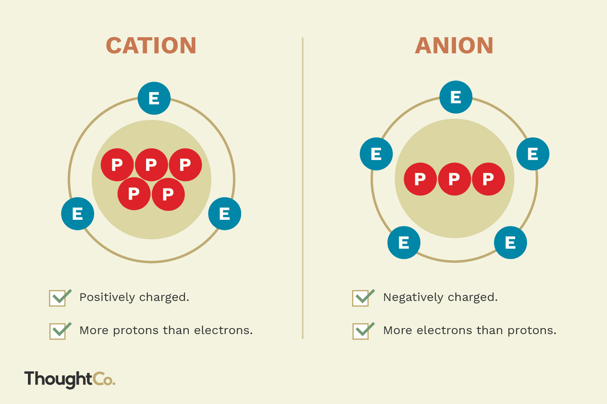
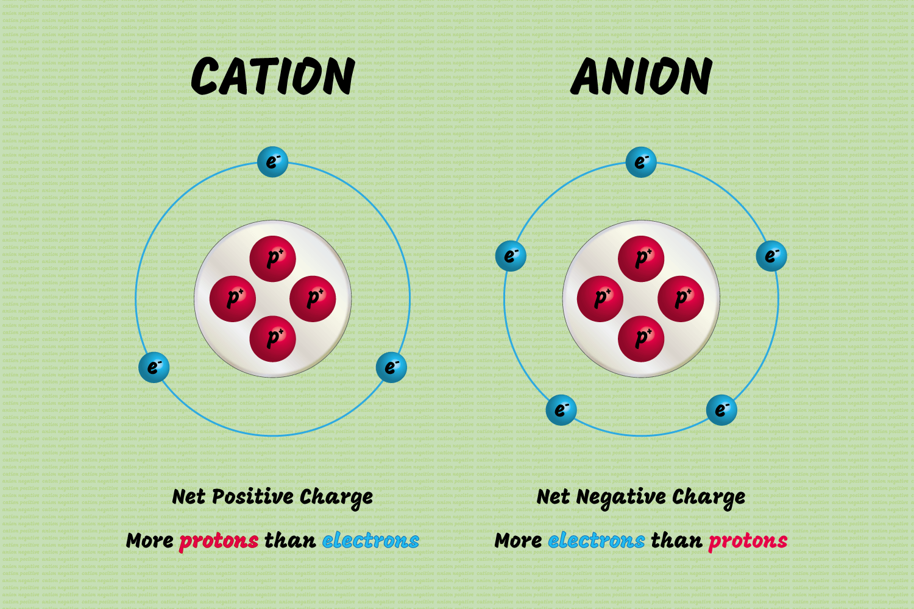
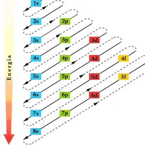

Estudo Completo sobre Química Atômica
Os íons são espécies químicas que se formam quando substâncias ou átomos eletricamente neutros perdem ou ganham elétrons. Portanto, eles podem ser carregados positivamente, recebendo o nome de cátions; ou carregados negativamente, recebendo o nome de ânions.

Figura 1: Diferença estrutural entre cátions (carregados positivamente) e ânions (carregados negativamente)
A carga dos íons gerados é numericamente igual ao número de elétrons que foram ganhos ou perdidos pela espécie química. Os íons são formados durante uma reação química. A propensão para se tornar um cátion ou um ânion depende de duas ordens de grandeza: energia de ionização e afinidade eletrônica. Em geral, os metais tendem a se tornar cátions e os não metais tendem a se tornar ânions.
Em resumo, íons são espécies carregadas com cargas positivas ou negativas, formadas quando um átomo neutro perde ou ganha elétrons.
Por serem eletricamente carregados, os íons têm a capacidade de fazer com que algumas soluções se tornem condutoras de corrente elétrica. Essas são as chamadas soluções eletrolíticas. Foi a partir do entendimento dessas soluções que dispositivos de geração de energia elétrica, como as pilhas e as baterias, foram fabricados.

Figura 2: Exemplos de cátions e ânions comuns na natureza
Na natureza os átomos podem apresentar certa semelhança atômica. Essa semelhança está associada à quantidade de prótons e nêutrons presentes no núcleo de um átomo, assim como com a quantidade de elétrons existentes na eletrosfera. Vamos conhecer as categorias de semelhanças atômicas:
Isóbaros - São as espécies atômicas que apresentam o mesmo número de massa, porém, diferentes números atômicos. Exemplos: Ca e Ar.
Isótonos - São as espécies atômicas que apresentam a mesma quantidade de nêutrons. Exemplos: B e Be.
Isoeletrônicos - São as espécies atômicas que apresentam a mesma quantidade de elétrons. Exemplos: Na+ e Be.
Além dessas 3 categorias, existem os isótopos, átomos que apresentam semelhanças no número de prótons, mas que variam no número de nêutrons. São átomos que possuem em comum o mesmo número de prótons, pertencendo ao mesmo elemento químico, mas diferentes números de massa e diferentes números de nêutrons. Os isótopos do hidrogênio recebem nomes especiais: Prótio (0 nêutron), Deutério (1 nêutron) e Trítio (2 nêutrons).
A partir do modelo atômico de Bohr, que é um aperfeiçoamento do modelo atômico de Rutherford, tornou-se possível compreender alguns fenômenos que, anteriormente, não eram explicados com eficácia pelos modelos atômicos anteriores.
Nas décadas de 1920 e 1930, os cientistas analisaram profundamente os espectros atômicos e observaram, por meio de equipamentos avançados, que as bandas refletidas no espectro dos átomos apresentavam estruturas de reflexão finas, ou seja, algumas linhas eram compostas por duas ou mais linhas próximas.
Essas linhas muito próximas foram chamadas pelos cientistas de subníveis de energia. Então, uma linha espectral identificada no modelo de Bohr corresponde a uma camada. Já as linhas muito próximas, identificadas por cientistas posteriores ao modelo de Bohr, correspondem aos subníveis de energia.
O número de subnível por camadas é dado pelo número de camadas, por exemplo, a camada L é o número 2, então, ela apresenta dois subníveis. Assim, temos sete camadas e sete subníveis designados pelas letras minúsculas s, p, d, f, g, h e i. Os subníveis g, h, i são meramente teóricos.
De acordo com Bohr, a energia da camada aumenta com o distanciamento do núcleo. Isso também acontece com os subníveis de energia, que aumentam com o distanciamento do núcleo.
A partir dessas descobertas, elaborou-se um diagrama de diagonais, que indica a ordem crescente de energia dos subníveis de energia.

Figura 3: Diagrama de Linus Pauling mostrando a ordem crescente de energia dos subníveis
Os elétrons de um átomo estão organizados em camadas ao redor do núcleo, como se fossem andares de um prédio. Eles sempre ocupam os lugares de menor energia primeiro, pois isso deixa o átomo mais estável.
Esse arranjo segue um padrão chamado diagrama de Linus Pauling, que nos ajuda a entender quantos elétrons podem existir em cada camada e em cada subnível.
Quando os elétrons estão distribuídos da maneira mais estável possível, dizemos que o átomo está no estado fundamental. Se receberem energia, podem saltar para camadas mais externas, mas depois voltam ao normal, liberando essa energia na forma de luz ou calor.
Para fazer a distribuição eletrônica utilizando o diagrama de Pauling, analisamos a seguinte legenda: ns (n = nível e s = subnível).
A distribuição eletrônica pelo diagrama de Pauling, além de fornecer o número de elétrons por subníveis, também apresenta o número de elétrons por nível ou camada.
Como exemplo, observe a distribuição eletrônica do neônio, em seu estado fundamental. Observe que os elétrons estão distribuídos em dois níveis de energia, ou seja, duas camadas. O nível (camada) mais externo será denominado de camada de valência, neste caso, o nível 2 (ou camada L), que apresenta oito elétrons.